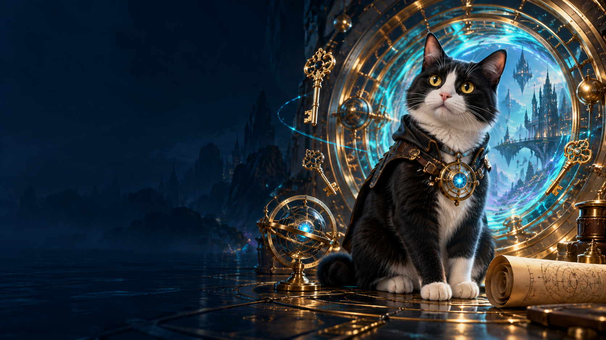

Вступ до криптографіїКриптографія.
Криптографія.
Подорож у часі
Від давніх шифрів до цифрових секретів майбутнього.
Відкрити теми
Минуле · сьогодення · майбутнєМаршрут подорожі
П’ять розділів. Кожна тема — нова таємниця.
Розділ 01
Вхід у світ таємниць
Перший крок крізь час
- 01Перейти
Таємне повідомлення
Історія криптографії · ключ · алгоритм · шифротекст
Розділ 02
Шифри минулого
Від стрічки до ключового слова
Розділ 03
Сучасні шифри
Коли повідомлення стає кодом
Розділ 04
Ключі та довіра
Як зберегти секрет і перевірити авторство
- 08Перейти
Секрет на очах у всіх
Діффі—Геллман · еліптичні криві · ECDH
- 09Перейти
Два ключі до однієї таємниці
Відкритий і закритий ключі · RSA
- 10Перейти
Цифрові відбитки: пошук підміни
MD5 · SHA-1 · SHA-256 · Python
- 11Перейти
Куди зникає пароль?
Сіль · хешування паролів · автентифікація
- 12Перейти
Доказ авторства
Цифрові підписи · сертифікати
Розділ 05
Таємниці навколо нас і попереду
Приховані дані та шифри майбутнього